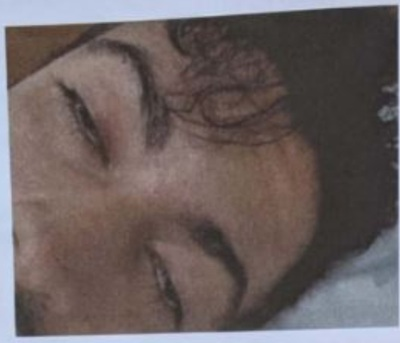
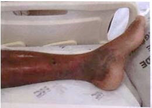
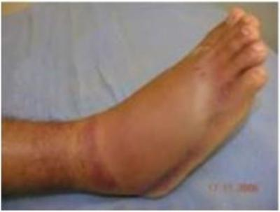
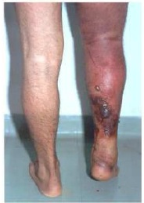

Questão 1 · Acidente botrópico · 4000118941Qual é o acidente ofídico mais prevalente no Brasil?
A Botrópico.
B Crotálico.
C Laquetico.
D Elapidico.
Questão 2 · Acidente crotálico · Manif estações clínicas · 4000114569Homem de 27 anos, trabalhando na lavoura de café foi picado no tornozelo por cobra não encontrada. Apresenta ptose palpebral que surgiu nas ultimas 2 horas. Dentre as serpentes abaixo, qual a mais provável de ser a causadora do acidente:
A jararaca;
B urutu;
C cascavel;
D caninana.
Questão 3 · Manif estações clínicas · 4000112346Menino, 5 anos, procedente da zona rural chega na emergência com história de picada por animal não identi cado. Logo em seguida apresentou vômitos, sudorese e sonolência. Ao exame físico: MEG, descorado, acianótico, hidratado. Olhos: ptose palpebral. Boca: seca. Ausculta cardíaca e pulmonar sem alterações, FR 30 ipm, FC 130 bpm, pulsos cheios. Tempo de enchimento capilar 2 segundos. PA: 100 x 60 mmHg. Abdome: plano, normotenso, indolor, fígado e baço não palpáveis. SN hipotonia de musculatura e midríase. Diante deste quadro clínico qual o soro antiveneno você optaria?
A Soro antibotrópico.
B Soro antiloxosceles.
C Soro anticrotálico.
D Soro antiescorpiônico.
Revisar: possível letra faltando em enunciado
Questão 4 · Animais peçonhentos · 4000110138Menino de 10 anos refere ter sido picado no pé direito enquanto brincava com uma pipa em um terreno da área rural de um município do interior de São Paulo. Foi então levado por sua mãe até o pronto-socorro municipal. O menino apresentava-se consciente, sudoreico com dor intensa no pé, apresentou vômito e posteriormente evoluiu com priapismo. Qual o diagnóstico do tipo de acidente?
A Acidente ofídico botrópico.
B Acidente ofídico crotálico.
C Acidente com phoneutria.
D Acidente com loxoceles.
E Acidente escorpiônico.
Questão 5 · Acidentes por lagartas · Manif estações clínicas · 4000110110Você atende um paciente de 20 anos que estava caminhando na beira do rio, quando encostou em um galho de árvore e sentiu uma ardência e dor em queimação no braço direito. A pele cou com eritema e edema na região de contato, evoluindo com lesões puntiformes eritematosas nos pontos de inoculação das cerdas. O paciente apresentou apenas lesões locais e foi orientado a lavar o local com água corrente e colocar compressas geladas. Qual a principal complicação causada pelo envenenamento das cerdas das lagartas deste gênero?

A Agitação psicomotora.
B Contraturas musculares intermitentes.
C Arritmia cardíaca.
D Manifestações hemorrágicas.
Questão 6 · Clínica Médica · Inf ectologia · Animais peçonhentos · 4000077561Nos últimos anos, observamos um aumento no número de acidentes por escorpião. Acerca destes acidentes, assinale a assertiva INCORRETA:
A Em casos leves, com manifestações apenas locais, o tratamento é apenas sintomático.
B Casos graves são mais frequentes em crianças menores de 10 anos.
C Deve-se procurar atendimento médico imediatamente.
D As manifestações sistêmicas são sempre tardias.
E A intensidade das manifestações depende da quantidade de veneno inoculada.
Questão 7 · Acidentes por Tityus · 4000036826Analise o quadro clínico a seguir. Um lactente de 2 anos de idade é levado ao pronto-atendimento devido a choro inconsolável durante a madrugada enquanto dormia em colchão no chão, em um barracão, numa área de ocupação. Ao exame, o paciente estava irritado, com mácula eritematosa em antebraço esquerdo, sudorese profusa, bradicárdico e com crepitações à ausculta pulmonar bilateralmente. Diante desse quadro, é correto afirmar:
A O paciente pode ter sido picado por um escorpião amarelo, e o quadro é considerado grave, sendo necessária a infusão de soro específico.
B Trata-se de um quadro clínico sugestivo de erucismo por lagarta Lonomia sp, e o paciente necessita receber antifibrinolítico.
C O pediatra deve pensar em picadura por Crotalus sp, realizar um torniquete no local da picada e transferir o paciente para outro hospital.
D O quadro clínico é sugestivo de acidente com aranha armadeira, Phoneutria sp, e o paciente deverá receber alta com analgésicos comuns.
Questão 8 · Of idismo · 4000032912Os acidentes ofídicos representam sério problema de saúde pública nos países tropicais pela frequência com que ocorrem e pela morbimortalidade que ocasionam. Existem no mundo aproximadamente 3000 espécies de serpentes, das quais de 10 a 14% são consideradas peçonhentas. Assinale a alternativa que contem uma característica de cobra peçonhenta:
A Cauda afinando lentamente.
B Presença da fosseta loreal.
C Cabeça arredondada.
D Pupilas arredondadas.
Questão 9 · Tratamento · 4000032083Paciente foi picado por cascavel. Desta forma a melhor forma de prevenir a insuficiência renal inclui:
A O acidente ofídico crotálico impõe risco de rabdomiólise com mioglobinúria. O tratamento inclui hidratação e uso de diuréticos osmóticos.
B Depleção de glutamato que pode ser revertido com administração de acetilcisteína.
C Vasoplegia, que causa hipotensão, maior responsável pela insuficiência renal no acidentes crotálicos, deve ser tratada com noradrenalina.
D O veneno age com interrupção do funcionamentos dos receptores nos ductos coletores. Melhor medicação é a furosemida.
Questão 10 · Acidente crotálico · 4000027280Paciente procedente do interior do estado foi vítima de picada de cobra e apresenta o seguinte quadro clínico: dois orifícios em perna esquerda, com formigamento no local, sem dor. Apesar de responder a solicitação tem di culdade de manter olhos abertos. Queixa de visão turva e diplopia. Apresenta mal-estar, irritabilidade, náuseas, cefaleia e mialgia. Relata ainda diurese escura. Com o quadro clínico citado, a qual grupo pertence a serpente responsável pelo acidente?
A Bothrops.
B Crotalus.
C Lachesis.
D Micrurus.
E Etapidae.
Questão 11 · Of idismo · 4000124560Qual dos acidentes ofídicos é o mais frequentes no Brasil?
A Crotálico
B Elapídico
C Botrópico
D Laquetico
Questão 12 · Tratamento · 4000118161Em relação aos acidentes com escorpiões,
A o quadro clínico sistêmico é mais frequente em adultos do que em crianças.
B CIVD e insuficiência renal aguda são complicações frequentes.
C a soroterapia está indicada nos casos de acidente escorpiônico de gravidademoderada e grave.
D a espécie Tityus bahiensis (escorpião marrom) é a responsável pela maioria dos casosde acidentes escorpiônicos.
E o quadro clínico local apresenta dor, com intensidade fraca, sudorese, eritema epiloereção.
Questão 13 · Acidente botrópico · 4000108428Os acidentes botrópicos são causados por serpentes do gênero Bothrops. Determina processo inflamatório no local da picada, com edema tenso, equimose, dor e adenomegalia regional, que progridem ao longo do membro acometido, É serpente causadora desse tipo de acidente a:
A Cascavel.
B Coral verdadeira.
C Jararaca.
D Cobra cipó.
Questão 14 · Acidente crotálico · Manif estações clínicas · 4000108415A urina de cor escura caracteriza um dos achados da rabdomiólise, sinal de presente em acidentes ofidicos do tipo:
A Laquético.
B Crotálico.
C Elapídico.
D Botrópico.
Questão 15 · Manif estações clínicas · 4000108404Homem 27 anos, trabalhador rural, refere ter sido picado por animal não identi cado em membro inferior direito há 3 horas, evoluindo com turvação visual além de alteração em exame físico ( figura). Qual é a alteração laboratorial esperada pelo veneno deste animal?

A Hipocalemia.
B Elevação de AST.
C Elevação de troponina.
D Hematúria.
Revisar: possível letra faltando em enunciado
Questão 16 · Escorpionismo · 4000097911Criança, 3a, trazida ao pronto-socorro com quadro de sudorese profusa, vômitos incoercíveis, salivação excessiva, alternância de agitação com prostração, e bradicardia. Familiar refere que moram em área urbana com várias casas em construção ao redor e que a criança estava brincando na rua quando chegou chorando muito. O QUADRO CLÍNICO DESCRITO É COMPATÍVEL COM:
A Acidente loxoscélico.
B Acidente botrópico.
C Escorpionismo.
D Acidente crotálico.
Questão 17 · Acidente crotálico · Acidente botrópico · Acidente laquético · 4000074276Assinale a alternativa correta que correlaciona o agente causal com as manifestações clínicas dos acidentes ofídicos: I- Botrópico; II- Laquético; III- Crotálico. 1. Manifestações neuroparalíticas com progressão crânio-caudal, iniciando-se por ptose palpebral, turvação visual e oftalmoplegia. Progressivamente, surgem mialgia generalizada e escurecimento da cor da urina (cor de "coca-cola" ou "chá preto"). A insuficiência renal aguda é a principal complicação e causa de óbito. 2. As marcas de picada e sangramento nem sempre são visíveis nos pontos de introdução das presas. Bolhas com conteúdo seroso ou sero-hemorrágico podem surgir e originar áreas de necrose, que, juntamente com infecção secundária, constituem as principais complicações locais e podem levar à amputação e/ou de cit funcional do membro. Sangramentos em pele e mucosas são comuns (gengivorragia, equimoses a distância do local da picada); hematúria, hematêmese e hemorragia em outras cavidades. Hipotensão pode ser decorrente de sequestro de líquido no membro picado ou hipovolemia consequente a sangramentos; 3. Presença de alterações vagais (náuseas, vômitos, cólicas abdominais, diarreia, hipotensão, choque).
A I-3; II-1; III-2
B I-2; II-1; III-3
C I-1; II-3; III-2
D I-3; II-2; III-1
E I-2; II-3; III-1
Questão 18 · Manif estações clínicas · 4000066646Homem, vive em zona rural em cidade do cerrado mineiro e no mês de março é picado, no m da tarde, por cobra não identi cada e não recuperada. Apresenta quadro clínico com a picada na perna direita, sem sinais inflamatórios ou edema local e pouca dor. As marcas são bem visíveis e o paciente apresenta ptose palpebral bilateral, urina escura, mialgia e coagulograma alargado. Qual é a serpente que causou o quadro?
A Jiboia.
B Cascavel.
C Coral.
D Jararaca.
Questão 19 · Tratamento · Manif estações clínicas · 4000052606LME, 35 anos, dona de casa, chega ao Pronto Socorro com a seguinte queixa: “Doutora, eu estava descansando na varanda de casa e senti uma picada no meu tornozelo, faz uns 20 minutos. Que dor horrorosa, meu Deus! Na hora doeu só o pé, mas agora a dor tá na perna toda até na virilha. Não vi o que me mordeu, até procurei, mas não vi nada. Agora além da dor, tô com vontade de vomitar.” Ao exame físico: REG, facies de dor, palidez, discreta sudorese, FC = 110 bpm, FR = 22, PA = 130x90 mmHg, Glasgow 15. BRNF 2T sem sopro, MV+ sem RA. Neurológico preservado. Em maléolo lateral observa-se ponto único de inoculação, edema de todo o pé e tornozelo, coloração eritematoviolacea ao redor do ponto de inoculação sem sinal de sangramento. Durante o exame físico paciente apresentou episódio de vômito. Você já tem ideia de que bicho mordeu essa senhora e decide pedir alguns exames: CPK e CKMB normais, ECG normal, discreta hipopotassemia. Restante dos exames também normais: glicemia, sódio e amilase. Com base no caso acima marque a alternativa correta:
A Escorpionismo; classificação do acidente leve; controle da dor e alta;
B Escorpionismo; classificação do acidente moderada; controle da dor, monitoramento, soro escorpiônico;
C Botrópico; classificação do acidente moderada; controle da dor e soro antibotrópico;
D Loxoscelismo; classificação grave; controle da dor e soro antiloxoscelico;
E Acidente por abelha; classificação leve; controle da dor e alta.
Questão 20 · Manif estações clínicas · 4000038451Um trabalhador rural de 28 anos dá entrada no PS trazido por amigos, com história de picada por cobra há três horas, sem visualização de detalhes do animal, que fugiu. O paciente refere dor local leve. Também queixa-se de mialgia, di culdade para articular bem as palavras e visão embaçada e dupla. Exames laboratoriais mostram alterações relevantes, como tempo de coagulação alargado, leucocitose sem desvio à esquerda e EAS com urina de aspecto escuro, porém sem hematúria. O quadro clínico-laboratorial descrito permite o diagnóstico de qual tipo de acidente ofídico?
A Botrópico
B Laquético
C Elapídico
D Crotálico
Questão 21 · Acidentes por Loxosceles · 4000031160O veneno de aranha que é proteolítico e hemolítico, podendo determinar quadros graves de anemia, icterícia, hemólise, púrpura e insuficiência renal pertence ao gênero:
A Lycosa (aranha tarântula).
B Latrodectus (aranha negra).
C Loxosceles (aranha marrom).
D Phoneutria (aranha armadeira).
Questão 22 · Of idismo · 4000024970Qual é o acidente ofídico mais comum em nosso estado, e que pode cursar com lesão renal aguda?
A Botrópico.
B Crotálico.
C Elapídico.
D Lachético.
Questão 23 · Acidente botrópico · 4000000321Paciente de 63 anos, hígido, trabalha em uma plantação de morangos. Chega ao pronto atendimento com história de picada por um animal em mão direita há 6 horas. Refere que não foi possível identi car o animal. Ao exame físico, apresenta apenas hiperemia e edema importante em mão direita. Não presenta alterações de sinais vitais ou comprometimento sistêmico. O que ocorreu com esse paciente pode ser caracterizado como:
A Acidente elapídico;
B Acidente por colubrídeos;
C Acidente botrópico;
D Acidente crotálico.
Questão 24 · Medidas gerais após acidente of ídico · 4000120613Em caso de Ofidismo devemos:
A Manter o paciente deitado.
B Fazer torniquete ou garrote.
C Cortar o local da picada.
D Perfurar ao redor do local da picada.
Questão 25 · Acidente crotálico · 4000099655Menina, 8a, trazida à unidade de emergência por apresentar diplopia e alteração da fala há um dia. Exame físico: ptose palpebral bilateral e diplopia. Exame oftalmológico: redução gradativa da força em músculo reto lateral e músculo elevador da pálpebra bilateralmente. Questionada, criança lembrou de ter “pisado em espinho” na tarde anterior. Pé esquerdo com ponto de inoculação eritematoso em 4º dedo. Creatinofosfoquinase = 4.425 U/L. Exame sumário de urina: Hb= positiva. O diagnóstico é de acidente :
A Crotálico.
B Elapídico.
C Loxoscélico.
D Botrópico.
Questão 26 · Of idismo · 4000084273Criança de 8 anos é trazida do interior do Estado por ter sido vítima de acidente ofídico. Dentre os itens abaixo, qual destas deve ser a sua primeira conduta:
A iniciar a soroterapia
B iniciar a hidratação vigorosa do paciente
C iniciar a medicação pré-soro
D aplicar vacina antitetânica
Questão 27 · Manif estações clínicas · 4000046006Paciente masculino, 19 anos, picado no antebraço direito por uma serpente. Admitido e internado no Hospital em cerca de 2 horas após. Apresentando edema discreto no antebraço direito, dor intensa no local, náuseas e vômitos, que coincidiam com cólicas abdominais paroxísticas, além de sudorese, visão turva, discreta epistaxe e diarréia; a frequência cardíaca, ao início com 108 batimentos por minuto, chegando a 62 após a soroterapia e pressão arterial em 130/80 mmHg; tempo de sangria em 4 min 15 seg, tempo de coagulação acima de 15 min, tempo de protrombina acima de 1 minuto. Após o anti- veneno o paciente evoluiu com melhora clínica; continuou assintomático até receber alta no terceiro dia, curado (textro extraído do artigo PARDAL et al, 2007). Quanto ao gênero da cobra, assinale o CORRETO:
A Bothrops
B Crotalus
C Micrurus
D Laquesis
Questão 28 · Manif estações clínicas · 4000034397Sobre os acidentes crotálicos é correto afirmar, EXCETO:
A Em geral cursam com muita dor local.
B São pouco importantes, diferindo dos acidentes botrópico e laquético.
C Sintomas neurológicos como fácies miastênica, surgem nas primeiras horas após a picada.
D A principal complicação, em nosso meio, é a Insuficiência Renal Aguda (IRA).
Questão 29 · Manif estações clínicas · 4000033434C.D.E, 26 anos, sexo masculino, lavrador, foi vítima de picada de cobra em MIE. Cerca de 1 hora depois, apresentou no local da picada dor intensa, edema, equimose importante e formação de bolhas. Nega parestesias, di culdades visual e respiratória. Ao exame não se constatou ptose palpebral. O aspecto macroscópico da urina sugere hematúria. Em relação aos acidentes ofídicos e a este particularmente, assinale a alternativa CORRETA:
A A dose do soro deve ser proporcional ao peso do paciente.
B A realização prévia de garroteamento do membro acometido e realização de um corte no local para sucção são medidas recomendadas.
C A dose do soro deve ser aplicada na região da picada.
D Há risco de insuficiência renal aguda e síndrome de compartimento.
Questão 30 · Acidentes por abelhas vespas e f ormigas · 4000015360Na Emergência, a mãe de uma criança de três anos de idade relata que a mesma foi picada por um inseto há cerca de 3 dias e que já recebeu um primeiro atendimento numa Unidade de Pronto Atendimento, cerca de duas horas após a picada. No momento, há dor aguda no local, vermelhidão, prurido e edema ogístico que evoluiu para enduração local; também há di culdades de mobilidade no membro afetado. Na UPA, o médico havia conseguido identi car e retirar o ferrão. Qual o inseto mais provável de ter causado essas alterações?
A Vespa.
B Arraia.
C Abelha.
D Formiga.
Questão 31 · Manif estações clínicas · 4000011136As jararacas são responsáveis por 90% dos acidentes ofídicos no Brasil. As principais complicações do acidente botrópico são, EXCETO:
A Síndrome Compartimental.
B Necrose de partes moles.
C Insuficiência Respiratória Aguda.
D Infecção bacteriana no local da picada.
Questão 32 · Manif estações clínicas · 4000001680Os acidentes com escorpiões têm grande importância entre os acidentes por animais peçonhentos, seja pela incidência ou pela gravidade dos casos, principalmente em crianças menores de sete anos. Com base nessa a rmação, assinale a alternativa correta:
A O edema agudo de pulmão é raro nos casos graves.
B Quando há edema agudo de pulmão ele tem apenas uma fisiopatologia, a relacionada à Insuficiência Cardíaca.
C Com a picada, o veneno faz apenas liberação de substâncias simpatomiméticas.
D O veneno do escorpião possui um grande número de proteínas que se ligam ao canal de sódio.
Questão 33 · Manif estações clínicas · 4000001628No Brasil, as serpentes do gênero Crotalus são representadas pela cascavel, seu acidente:
A Tem importância por corresponder a 70% das picadas de cobra no país.
B Causa morte por sangramento intenso nos pacientes.
C A ptose palpebral é um sinal presente no paciente que sofreu acidente crotálico o que ajuda a diferenciá-lo do botrópico.
D O CPK está normal nesses acidentes.
Questão 34 · Acidente botrópico · 4000127882Adolescente deu entrada na UPA com história de picada por cobra. Ao exame, apresenta apenas uma marca puntiforme com sangramento na perna direita. Há dor e edema importantes de tornozelo e pé, além de bolhas de conteúdo hemorrágico. Há 15 minutos iniciou com epistaxe. Trata-se de acidente:
A Crotálico, podendo evoluir para insuficiência respiratória por conta do veneno neurotóxico e miotóxico.
B Laquético, podendo evoluir para CIVD por conta do efeito coagulante e neurotóxico.
C Crotálico, que cujo veneno tem ação proteolítica, hemorrágica e coagulante.
D Botrópico, podendo evoluir para choque hipovolêmico e/ou insuficiência renal.
E Botrópico cujo veneno tem ação neurotóxica e miotóxica e consequente síndrome compartimental.
Questão 35 · Manif estações clínicas · 4000102782Homem, 54 anos, etilista, sem outros problemas de saúde, procurou atendimento em pronto-socorro por picada de animal desconhecido em membro inferior esquerdo há 2 dias enquanto trabalhava em área rural na proximidade de Ribeirão Preto. Após o acidente, apresentou dor local e, após cerca de 12 horas, notou a formação de eritema e bolha hemorrágica associados com febre, calafrios e náuseas. Exame físico: bom estado geral, descorado +/4, hidratado, acianótico, ictérico +/4; pele: lesão cutânea mostrada na figura abaixo: Ausculta pulmonar e cardíacas normais, FC = 92 bpm; PA = 135 x 80 mmHg; abdome: sem alterações. Exames: hemoglobina = 9,5 g/dl; VCM = 94 (VN: 80–95); HCM = 31 (VN: 27–32); GB = 18.000 (05% bastões); plaquetas = 180.000; LDH = 2.300 U/L (VN < 460); bilirrubina indireta = 2,5 mg/dl (VN < 0,9); bilirrubina direta = 0,28 mg/dl (VN < 0,3); creatinina = 1,6 mg/dl (VN < 1,5); ALT = 28 U/L (VN < 31); AST = 40 U/L (VN < 32); INR = 1,2 (VN: até 1,3); TTPA (ratio) = 1,12 (VN < 1,26). Qual é o agente etiológico mais provável?

A Loxosceles sp.
B Bothrops sp.
C Phoneutria sp.
D Crotalus sp.
Questão 36 · Acidentes por Loxosceles · 4000098584Menino, 2a, é trazido pela tia, que refere aparecimento de lesão em face dorsal de pé esquerdo há 3 dias que inicialmente era uma bolha com conteúdo seroso com edema local. Evolui com piora progressiva da lesão. Exame físico, pele: lesão dolorosa, endurada, equimótica, mesclada com áreas pálidas de isquemia com bolha necro-hemorrágica em dorso de pé esquerdo. O quadro acima se refere a acidente:
A Escorpiônico
B Botrópico
C Crotálico
D Loxoscélico
Questão 37 · Tratamento · 4000057066Sobre o tratamento com soro antiescorpiônico, considere as seguintes a rmações. I. Deve ser administrado por via oral.; II. Deve ser administrado independentemente do peso ou da idade do paciente.; III. Cada hora de atraso na aplicação do soro representa aumento de 13% no risco de morte dos pacientes. É CORRETO o que se afirma, APENAS, em:
A I e II.
B I e III.
C II e III.
D II.
Questão 38 · Manif estações clínicas · 4000046752Paciente masculino, 45 anos, cortador de cana, foi picado por uma Jararaca em tornozelo direito. No atendimento inicial são esperadas as seguintes manifestações, EXCETO:
A Ptose palpebral.
B Hematúria.
C Bolha e Equimose no local da picada.
D Edema na região da picada.
Questão 39 · Manif estações clínicas · 4000045889Menino, 3a, é trazida pela mãe, que refere aparecimento de lesão em dorso de pé direito há 3 dias, que inicialmente era uma bolha com conteúdo seroso com edema local, evolui com piora progressiva da lesão. Exame físico: Pele: lesão dolorosa, endurada, equimótica, mesclada com áreas pálidas de isquemia com bolha necro-hemorrágica em dorso de pé esquerdo. O quadro acima se refere a acidente:
A Escopiônico
B Brotrópico
C Crotélico
D Loxoscélico
E Nenhuma das respostas anteriores
Questão 40 · Rabdomiólise · 4000044541Paciente agricultor, morador da Zona Rural de Santarém deu entrada no Hospital Municipal informando acidente ofídico em membro inferior direito acontecido há 8h e evoluindo com importante dor e edema local. Apresenta elevação de Creatinofosfoquinase (CPK) com aumento de potássio (K) sérico e alterações eletrocardiográ cas. Clinicamente apresenta dispneia e oligúria. Neste caso, a causa provável da oligúria e do distúrbio eletrolítico é:
A Alcalose metabólica.
B Lesão muscular com rabdomiólise.
C Lesão direta glomerular do veneno.
D Nefrite intersticial aguda.
E Alteração vascular
Revisar: possível letra faltando em enunciado
Questão 41 · Manif estações clínicas · 4000039282Qual das seguintes alterações não seria encontrada na avaliação clínica e nos exames complementares de uma criança de 2 anos, vítima de um acidente escorpiônico clinicamente grave?
A Aumento de CK e CK-MB.
B Bradicardia sinusal.
C Distúrbio de coagulação.
D Taquicardia sinusal.
Questão 42 · Manif estações clínicas · 4000033201Homem, 34 anos, dá entrada em pronto-socorro duas horas após a piacada por cobra não identi cada, com quadro de edema e dor intensa no local, dor abdominal em cólica, diarreia, náuseas, vômitos e escurecimento da urina. PA = 80 x 54 mmHg e FC= 48 bpm. Exames laboratoriais mostraram TC (tempo de coagulação) incoagulável. Este acidente ofí co é melhor classificado como:
A Laquético.
B Botrópico.
C Crotálico.
D Elapídico.
E O quadro clínico não é compatível com acidente ofídico.
Revisar: possível letra faltando em enunciado
Questão 43 · Tratamento · 4000030332Uma criança de 5 anos (20 kg) e um adulto de 45 anos (78 kg) foram picados na perna por uma cascavel, sendo o acidente ofídico classificado como grave em ambos. A dose de soro antiofídico a ser administrada a cada um será:
A A mesma, baseada na gravidade do acidente.
B Diferente, baseada no peso de cada um.
C Diferente. A dose da criança será metade da dose do adulto.
D A mesma, baseada no sítio da picada, desde que o tempo decorrido para o atendimento seja igual.
Questão 44 · Acidente crotálico · 4000123070Criança proveniente de Serrana chegou à UPA com história de acidente crotálico. Qual é a complicação mais compatível neste caso?
A Insuficiência renal pré-renal.
B Insuficiência cardíaca por diminuição da fração de ejeção.
C Síndrome compartimental.
D Necrose tubular aguda.
E Insuficiência respiratória aguda.
Questão 45 · Manif estações clínicas · 4000121973Em casos de acidentes escorpiônicos em crianças, deve-se considerar como fator(es) associado(s) à maior gravidade e ao pior prognóstico:
A A menor superfície corpórea e a presença de manifestações sistêmicas.
B A ausência de dor no local da picada.
C A presença de forte dor com irradiação para a raiz do membro acometido.
D Administração de soroterapia na presença de manifestações neurológicas.
Questão 46 · Manif estações clínicas · 4000097518Menino, 12a, refere ter sido picado na perna direita por animal há 2 horas quando estava em mata, com dor no local desde então. Exame físico: FC = 124 bpm; FR = 20 irpm; PA = 100 x 60 mmHg; membro inferior direito: edema até fossa poplítea e equimose em tornozelo. O diagnóstico é:
A Acidente elapídico.
B Acidente por Loxosceles.
C Acidente crotálico.
D Acidente botrópico.
Questão 47 · Manif estações clínicas · 4000086845Em relação ao acidente por picada de I. Os sinais e sintomas surgem precocemente (30 a 60 minutos após a picada). II. As formas clínicas descritas são: cutânea e cutâneo visceral. III. Deve-se solicitar hemograma, exame comum de urina, ureia e creatinina, exceto para casos cutâneos puros. Está/estão correta(s) a(s) afirmativa(s):
A Apenas I.
B Apenas II.
C Apenas III.
D Apenas I e II.
E I, II e III.
Questão 48 · Tratamento · 4000071716Homem, morador de Vassouras, é admitido na emergência em decorrência de mordedura de cobra na perna esquerda há 5 horas. Queixa-se de muita dor e no exame do local apresenta importante edema com sinais ogísticos. O tempo de coagulação mostrava-se alargado. Qual o tratamento inicial para este paciente?
A Soro anticrotálico.
B Soro antielapídico.
C Soro antibotrópico.
D Dexametasona e antihistamínico.
E Iniciar antibioticoterapia de amplo espectro.
Questão 49 · Animais peçonhentos · 4000046504Em relação aos acidentes por animais peçonhentos e suas manifestações clínicas associadas, marque a alternativa ERRADA:
A Acidente botrópico: não produz sintomas locais, exceto parestesia que progride pelo membro picado até acometimento da musculatura respiratória e asfixia.
B Acidente crotálico: dor na nuca, diminuição da visão e dificuldade para falar.
C Acidente por aranha do gênero loxosceles: edema, eritema e flictena no local da picada, evoluindo até úlcera extensa de difícil cicatrização.
D Escorpionismo: dor local, agitação, taquicardia, vômitos e priapismo.
Questão 50 · Tratamento · Acidente crotálico · Manif estações clínicas · 4000009984Um paciente com 23 anos de idade foi vítima de acidente ofídico e procurou atendimento médico queixando-se de pouca dor no local da picada, boca seca, diplopia, di culdade de deglutição, dores musculares generalizadas, oligúria e urina com coloração vermelha escura. Ao exame, apresentou ptose palpebral bilateral, midríase e plegia dos pares cranianos III, IV e VI. O resultado do exame de urina evidenciou mioglobinúria. Considerando essa situação hipotética, assinale a alternativa correta em relação ao tratamento do doente.
A A acidificação da urina é necessária para evitar a precipitação intratubular de mioglobina.
B A analgesia com anti-inflamatórios não esteroidais está indicada caso haja dor importante.
C O uso de antibioticoterapia profilática reduz a incidência de abcessos locais.
D A aplicação de torniquetes ou garrotes melhora o prognóstico por reduzir a circulação de veneno.
E A diurese osmótica deve ser induzida com o emprego de solução de manitol a 20%.
Questão 51 · Acidente elapídico · 4000009094A respeito do tratamento de acidentes ofídicos, assinale a alternativa correta.
A No acidente elapídico, pode-se, além do soro, utilizar atropina e anticolinesterásico
B A administração de heparina sempre deve preceder o uso de antibotrópico
C Reações tardias como urticária, febre e adenomegalia, após a administração do soro, ocorrem apenas quando se utiliza de anticrotálico
D O tratamento da insuficiência respiratória aguda deve ser a primeira medida no tratamento do acidente laquético
E O uso de torniquete nos membros inferiores está especialmente indicado quando a serpente for do gênero Bothrops
Questão 52 · Manif estações clínicas · 4000074546Uma criança oriunda de região rural é trazida ao pronto atendimento apresentando sinais de acidente por animal peçonhento, ocorrido há mais de 12 horas. No tornozelo, apresentava pequeno edema não doloroso, um pouco de formigamento; as pálpebras superiores estavam semicerradas, o que a impedia de enxergar direito; queixa-se de dores na nuca e desde o ocorrido estava urinando cada vez menos. Baseado nestes dados, que tipo de acidente sofreu esta criança?
A Picada de cobra do grupo botrópico
B Picada de cobra do grupo crotálico
C Picada de cobra do grupo elapídico
D Picada de aranha – Phoneutria
E Picada de aranha – Loxosceles
Questão 53 · Manif estações clínicas · 4000062578Segundo estudo de "Sangenis et al.", o município de Valença concentra grande número de acidentes ofídicos por serpentes do gênero Crotalus. O acidente por este gênero de serpente se caracteriza por:
A Apresentar manifestações inflamatórias no local da picada e alta incidência de reações hemorrágicas.
B Apresentar manifestações locais pouco evidentes e paralisia respiratória por mecanismo de bloqueio neuromuscular pós-sináptico.
C Provocar maior incidência de acidentes graves com fácies miastênica, mioglobinúria e necrose tubular aguda precoce.
D Provocar insuficiência respiratória precoce por bloqueio neuromuscular pré e pós- sináptico.
Questão 54 · Manif estações clínicas · Tratamento · 4000062046O acidente ofídico de maior importância epidemiológica no Brasil é o botrópico responsável por 90% dos acidentes ofídicos. A respeito dos acidentes por picada de Jararaca é correto afirmar:
A Tempo de Coagulação é um exame muito importante para elucidação diagnóstica e norteador para necessidade ou não de dose adicional de soro antibotrópico.
B O tempo de Protrombina é o exame mais indicado a ser feito antes da administração do soro específico e 24h após a primeira dose do soro antibotrópico.
C O veneno da jararaca produz lesão local por ação proteolítica, mas não leva à alteração da função plaquetária ou plaquetopenia.
D Fenômenos hemorrágicos e até coagulação intravascular disseminada não são complicações esperadas em picadas por jararaca.
E O soro antibotrópico deve ser administrado apenas por acesso venoso central evitando-se ao máximo o acesso periférico.
Questão 55 · Manif estações clínicas · 4000050440Em casos de acidentes com animais peçonhentos, assinale a alternativa correta:
A Na maioria dos casos de acidentes com escorpiões, o tratamento é sintomático com infiltração de anestésico com vasoconstritor e analgésico sistêmico.
B Na grande maioria dos casos de acidentes com Loxosceles sp. ocorre hemólise intravascular nas primeiras 24 horas após a picada que caracteriza a chamada forma cutâneo-visceral.
C O envenenamento causado pela penetração de cerdas de lagartas do gênero Lonomia na pele podem determinar manifestações hemorrágicas como gengivorragia e epistaxe.
D Se um paciente submetido à soroterapia anticrotálica há três semanas evolui com temperatura de 37,8º C, dores nos cotovelos e joelhos e adenomegalia subclavicular e retroauricular podemos estar diante de um caso de reação anafilática aos componentes do soro.
E No Brasil, dos quatro gêneros principais de serpentes peçonhentas, verifica-se o predomínio dos acidentes crotálicos (73,5%), seguidos do botrópico (7,5%), do elapídico (3%) e por último o láquético (0,7%).
Questão 56 · Manif estações clínicas · Tratamento · 4000001431Paciente de 18 anos, masculino, residente no interior do Acre foi "picado no pé direito por uma cobra" há cerca de 4 horas. Relata dor moderada no local da picada e diz que sua perna está "inchando". Nega outras queixas. Exame físico: BEG, LOTE, fácies atípica, eucárdico (FC: 88 bpm) eupneico (FR: 18 irpm), PA: 120 x 80 mmHg, TA: 36ºC, AC: normal, AP: normal, abdome sem alterações, no pé direito há pequenos orifícios, edema se estendendo do pé até a região proximal da coxa direita, duas bolhas no dorso do pé direito, além de equimoses distribuídas pelo pé e perna direitos. A classificação do acidente e a melhor conduta com relação à soroterapia é:
A Acidente leve / Soro antibotrópico.
B Acidente moderado / Soro antibotrópico.
C Acidente grave / Soro antibotrópico-crotálico.
D Acidente grave / Soro antibotrópico-laquético.
Questão 57 · Manif estações clínicas · 4000114587Homem, 34 anos, dá entrada em Pronto-Socorro duas horas após ser picada por cobra não identi cada, com quadro de edema e dor intensa no local, dor abdominal em cólica, diarreia, náuseas, vômitos e escurecimento da urina. PA = 80/54 mmHg e FC = 48 bpm. Exames laboratoriais mostraram TC (Tempo de Coagulação) incoagulável. Este acidente ofídico é melhor classificado como:
A Laquético.
B Botrópico.
C Crotálico.
D Elapídico.
E O quadro clínico não é compatível com acidente ofídico.
Questão 58 · Manif estações clínicas · 4000103735Mulher, 24 anos de idade, atendida na sala de urgência. HMA: refere dor em pé direito após ter sido picada por um animal há 6 horas. A paciente não conseguiu identi car o animal. EF: BEG; corada; anictérica; acianótica; afebril. Presença de hiperemia, petéquias e edema moderado em pé direito. Sistema cardiovascular, respiratório, neurológico e abdome sem alterações. FC = 90 bpm; PA = 110 x 80 mmHg. Imagem do pé na figura. (VER IMAGEM) A hipótese diagnóstica mais provável é:

A Acidente botrópico.
B Acidente crotálico.
C Acidente por Phoneutria.
D Acidente por Loxosceles.
Questão 59 · Acidente botrópico · 4000060076As serpentes são as principais causadoras de acidentes por animais peçonhentos no Brasil. Dentre as opções abaixo, qual apresenta somente espécies peçonhentas, comumente encontradas no Brasil?
A Bothrops jararaca e Boa constrictor.
B Corallus caninus e Crotalus durissus.
C Eunectes murinus e jararacussu.
D Corallus caninus e Bothrops jararaca.
E Bothrops jararaca e jararacussu.
Questão 60 · Tratamento · 4000082524Considere as afirmativas abaixo sobre procedimentos em acidentes escorpiônicos: I. Limpar o local com água e sabão e aplicar compressa morna no local. II. Não aplicar nenhum tipo de substâncias sobre o local da picada (fezes, álcool, querosene, fumo, ervas, urina) nem fazer curativos que fechem o local. III.Se for possível, capturar o animal e levá-lo ao serviço de saúde. Quais estão corretas?
A Apenas I.
B Apenas I e II.
C Apenas I e III.
D Apenas II e III.
E I, II e III.
Questão 61 · Manif estações clínicas · Manif estações clínicas · 4000040228No que concerne aos acidentes ofídicos no Brasil, de grande relevância na área rural, são válidas as seguintes a rmativas, EXCETO:
A A fácies miastênica ou neurotóxica constitui a expressão clínica mais comum no envenenamento por coral verdadeira (gênero Micrurus), ao passo que no envenenamento por surucucu-pico-de-jaca (gênero Lachesis) as manifestações clínicas são indistinguíveis daquelas observadas no acidente botrópico, a menos que, no acidente laquético, apareçam manifestações vagais como bradicardia, hipotensão arterial, cólicas abdominais e diarreia.
B As manifestações locais (dor, edema, equimose, formação de bolhas e necrose cutânea) são evidentes nos acidentes por Crotalus durissus, mas inexpressivas nos acidentes por serpentes do gênero Bothrops.
C O gênero Bothrops responde pela maior parte das serpentes peçonhentas encontradas no País, ao passo que o gênero Crotalus é representado por uma única espécie (Crotalus durissus).
D O veneno de Crotalus durissus provoca manifestações neurológicas (turvação visual, ptose palpebral, oftalmoplegia), rabdomiólise, mioglobinúria e insuficiência renal aguda.
Questão 62 · Manif estações clínicas · 4000036783Paulo, 53 anos, morador do Pantanal sul-matogrossense, refere que há 18h foi vítima de picada de jararaca em dorso do pé esquerdo. Apresenta-se pálido, com dor intensa e edema local com flictenas. É correto afirmar:
A Trata-se do gênero Crotalus responsável pela maioria dos acidentes ofídicos no Brasil.
B Seu veneno é proteolítico, coagulante e hemorrágico.
C Deve ser administrado o soro anticrotálico o mais breve possível, pois o tempo de exposição e volume inoculado do veneno interfere na gravidade.
D Introdução de antimicrobianos está contraindicada.
E O torniquete pode minimizar a gravidade do acidente quando o socorro demorar.
Questão 63 · Of idismo · 4000119143Homem, 25 anos de idade, deu entrada no pronto-socorro com história de mordida de cobra no terço distal da panturrilha direita, há 4 horas. No momento, apresenta ptose palpebral e a urina da última micção, há poucos minutos, tem aspecto marrom escuro. A lesão na panturrilha direita consiste em duas perfurações, com leve hiperemia ao redor. Assinale a alternativa com as alterações da urina rotina mais prováveis deste paciente:
A Densidade: 1020; proteína: negativa; Heme-pigmentos: negativos / Urobilinogênio: ++++; Hemácias: ausentes; Leucócitos: ausentes.
B Densidade: > 1030; proteína: negativa; Heme-pigmentos: ++++ / Urobilinogênio: negativo; Hemácias: incontáveis/campo; Leucócitos: ausentes.
C Densidade: > 1030; proteína: ++++; Heme-pigmentos: ++++ / Urobilinogênio: negativo; Hemácias: incontáveis/campo; Leucócitos: 60 a 80/campo.
D Densidade: 1020; proteína: negativa; Heme-pigmentos: ++++ / Urobilinogênio: negativo; Hemácias: ausentes; Leucócitos: ausentes.
Questão 64 · Tratamento · 4000094859Paciente feminina, 22 anos de idade, estava caminhando na trilha da praia da Lagoinha do Leste quando sofreu acidente botrópico. Trazida pelo Serviço de Atendimento Móvel de Urgência (SAMU), chega ao Hospital Universitário para avaliação no Centro de Informações Toxicológicas (CIT) apresentando local de inoculação em tornozelo, com dor, edema e equimose, e com tempo de protrombina e tempo de coagulação incoaguláveis. Feita a soroterapia, ainda manteve, após 12 horas, o tempo de coagulação e o tempo de protrombina incoaguláveis. A paciente encontra-se em bom estado geral e assintomática quando em repouso. A CONDUTA ADEQUADA é:
A não dar alta para a paciente e repetir exame em 12 horas.
B transfundir plasma fresco congelado.
C administrar vitamina K parenteral.
D administrar dose adicional de soro antibotrópico.
E administrar ácido aminocaproico.
Questão 65 · Araneísmo · 4000062624Paciente de 42 anos, relata 24 horas de evolução de lesão eritematosa, dolorosa em região interna de membro inferior direito. Ao exame: observa-se uma placa eritematosa, com área necrótica central. As alternativas seguintes fazem parte do diagnóstico diferencial da lesão, exceto:
A Acidente por Loxosceles.
B Vasculite.
C Acidente por Latodrectus.
D Síndrome de sweet.
E Pioderma gangrenoso.
Questão 66 · Tratamento · 4000034327Homem de 19 anos foi trazido ao pronto socorro (PS) com história de provável picada de cobra há 2h e 30min. Ao exame estava consciente, orientado, queixando náuseas e dor no calcanhar direito, que estava edemaciado, com lesões bolhosas e equimoses. Estava com pressão arterial: 120 x 90 mmHg, frequência cardíaca: (102 bpm). O hemograma mostrava 10.500 Ieucócitos/mm3, com 7% de bastonetes, plaquetas: 180.000/mm3. O TPPa (tempo de tromboplastina parcialmente ativada) era de 60 segundos. Assinale a MELHOR conduta para este caso:
A Uso de soro antiofídico (genérico).
B Uso de 10 ampolas IV de soro anticrotálico.
C Uso de 5 ampolas IV de soro antilaquético.
D Uso de 4-8 ampolas IV de soro antibotrópico.
Questão 67 · Manif estações clínicas · 4000067819A lesão abaixo é decorrente de acidente ofídico em área de mata no interior do Paraná. Havia ocorrido aproximadamente há 4 horas da entrada do paciente no hospital. Não há sintomas sistêmicos, apenas dor intensa no local. Pelo aspecto da lesão, assinale a alternativa que sugere CORRETA e RESPECTIVAMENTE a ação da peçonha e o gênero do ofídeo. (VER IMAGEM)

A Ação proteolítica e coagulante, gênero Bothrops.
B Ação proteolítica e coagulante, gênero Crotalus.
C Ação miotóxica e coagulante, gênero Micrurus.
D Ação miotóxica e neurotóxica, gênero Crotalus.
E Ação proteolítica e neurotóxica, gênero Bothrops.
Questão 68 · Tratamento · 4000081942Paciente masculino, de 28 anos, trabalhador rural, chega ao serviço de saúde trazido por familiares, devido a picada de membro inferior esquerdo por “Jararaca”, ocorrida há 2 horas. O ofídio foi capturado. Ao exame, foram constatados dois sinais puntiformes de picada, edema local leve. Com relação a este caso, as medidas a serem consideradas estão listadas abaixo. Qual a INCORRETA?
A Manter hidratação, controlar sinais vitais, medir diurese diária e realizar o tempo de coagulação na admissão e, posteriormente, a cada 12 horas.
B Fazer antissepsia do local da picada.
C Manter repouso no leito nas primeiras 24 horas com o segmento anatômico atingido em posição de drenagem postural.
D Aplicar 2 a 4 ampolas de soro antibotrópico, por ser uma caso leve e ocorrido há menos de 6 horas.
E Administrar anti-inflamatórios e analgésico, tipo salicitato.
Questão 69 · Escorpionismo · Cardiologia · 4000010164João, 18 anos, residente em Fortaleza, comparece à unidade de saúde após “picada” de escorpião há cerca de 4 horas. Apresenta dor local. Considerando que ele tem microalbuminúria, não teve evento isquêmico coronariano e não tem insuficiência cardíaca ou renal, qual a classe de anti-hipertensivo de escolha?
A Inibidores da enzima conversora da angiotensina/antagonista do receptor da angiotensina.
B Beta-bloqueadores.
C Diuréticos de alça.
D Bloqueadores dos canais de cálcio.
Questão 70 · Tratamento · 4000010153João, 18 anos, residente em Fortaleza, comparece à unidade de saúde após “picada” de escorpião há cerca de 4 horas. Apresenta dor local. Quanto à conduta, assinale a alternativa CORRETA:
A Encaminhar o paciente ao Centro de Assistência Toxicológica.
B Aplicar soro antiescorpiônico.
C Usar analgésico oral.
D Observar o paciente por 6 horas com hidratação venosa.
Questão 71 · Acidentes por Loxosceles · 4000101552Um senhor de 42 anos apresenta uma lesão no braço esquerdo há dois dias. Refere prurido e dor em queimação. Ao exame, apresenta um eritema com halo esbranquiçado, com ponto de necrose de aproximadamente 1 cm de diâmetro. Nega outros sintomas e não identi ca a causa da lesão. Assinale a alternativa que apresenta a conduta mais indicada para esse caso. Respostas: 1 12 23 34 45 56 67
A Tratamento com curativo local, analgésicos e corticoide oral; notificação e acompanhamento da lesão
B Tratamento com curativo e tratamento sintomático
C Encaminhamento para o Centro de Especialidades
D Tratamento com curativo local e antibioticoterapia
E Encaminhamento para soro antiaracnídeo ou antiloxoscélico
Revisar: possível letra faltando em enunciado